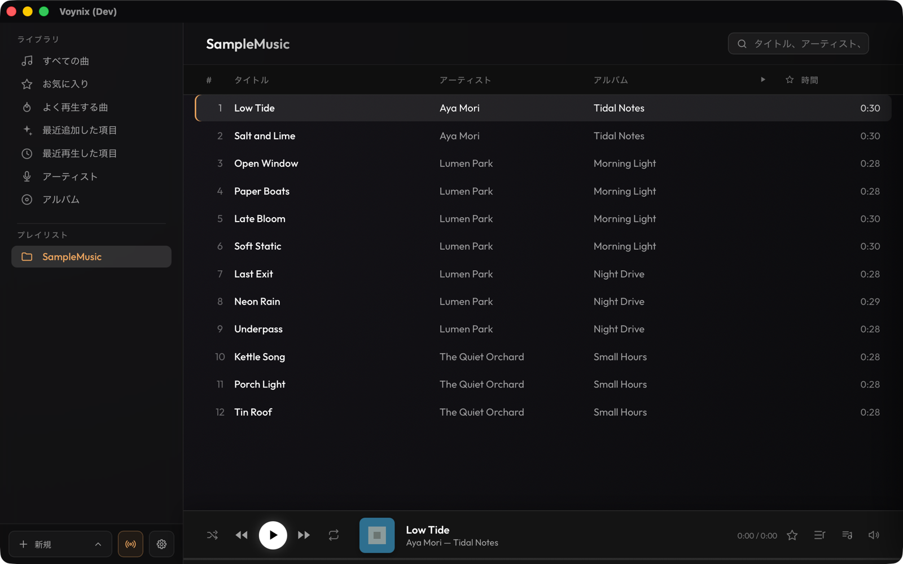
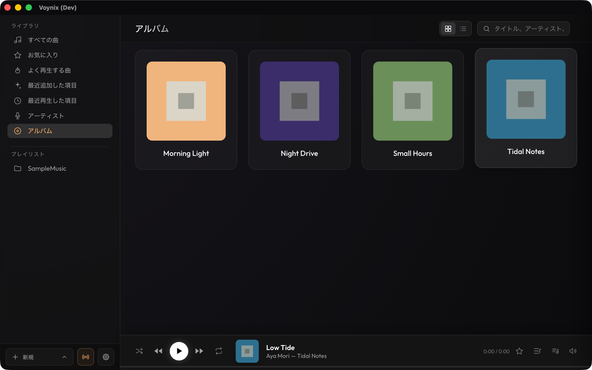
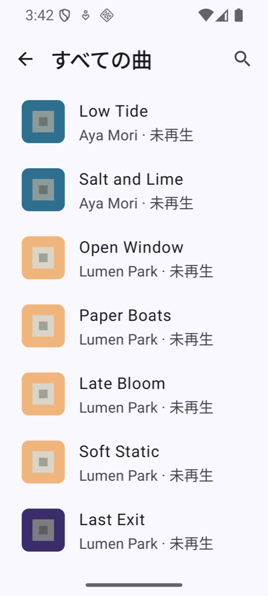
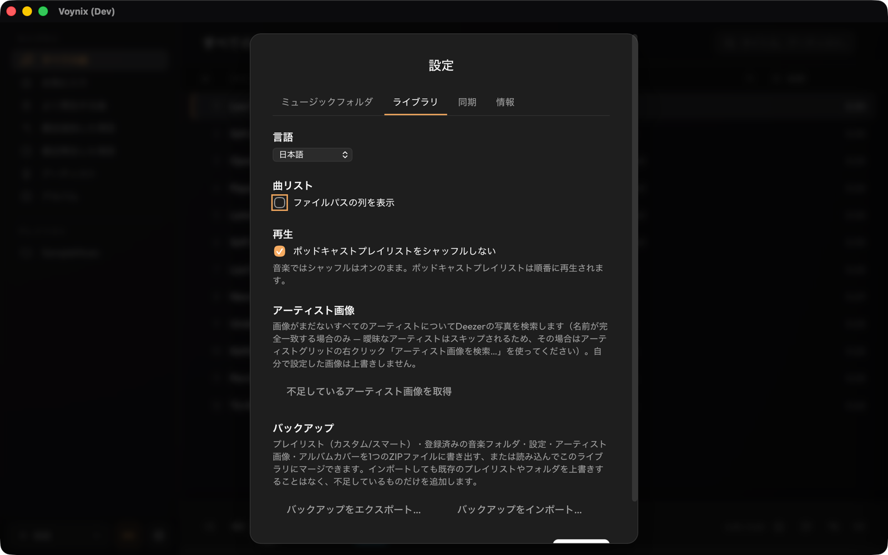

Voynix
Voynix
Voynix ユーザーマニュアル
Voynix は、Mac と Android 向けのローカルファーストな音楽プレーヤーです。
概要
- Mac のライブラリを Wi-Fi 経由で Android に同期します。再生履歴やお気に入りも、Android から Mac に反映されます
- Android Auto に対応しています
- 音楽再生: ローカルの音楽ファイル（mp3, m4a, flac）をスキャンしてライブラリ管理（アーティスト、アルバム、プレイリスト）。Mac・Android とも曲間の無音を挟まないギャップレス再生に対応
- プレイリスト: 通常のプレイリストに加え、ジャンル・アーティスト・再生回数・追加日・お気に入りなどの条件で自動的に曲を集めるスマートプレイリスト。Most Played / Recently Added / Recently Played も用意
- 曲情報の編集: 「Get Info…」から曲・アルバム・アーティスト単位でタイトルやタグを編集可能。アーティスト画像は自動取得できます
- Podcast: 再生速度の変更（0.8〜2.0x）、±10秒スキップ、シャッフル対象外
- iTunes 連携: iTunes のライブラリ XML からプレイリストをインポート
動作環境: macOS（配布している DMG は Apple Silicon 専用）、Android 8.0（API 26）以上。Android Auto は任意です。同期には Mac と Android が同じ Wi-Fi ネットワーク上にあることが必要です。

インストール
Mac
Releases から .dmg をダウンロードして Applications にドラッグします。
Homebrew（Apple Silicon）では brew install --cask tekapo/voynix/voynix を実行します。この場合は下の警告は出ません。更新は brew upgrade --cask voynix です。
xattr -cr /Applications/Voynix.app を実行してから開き直す方法もあります。初回だけ必要です。Android
Releases から voynix-<バージョン>.apk をダウンロードして端末で開きます。初回は、ブラウザやファイルアプリに「提供元不明のアプリ」のインストールを許可するよう求められます。
更新を自動で受け取りたい場合は Obtainium に登録します。「アプリを追加」→ https://github.com/tekapo/voynix を入力してインストールすると、各 Release の .apk を取得し、新しいバージョンが出たときに通知してくれます。
APK は Google Play では配布していません。初回起動時、Android 13 以上では通知権限の許可を求められます。
はじめに
音楽を取り込む（Mac）
サイドバーの 「＋ New」→「Add Music Folder…」から音楽フォルダを追加するとスキャンが始まります。Settings → Music Folders からは再スキャン（Rescan All）や iTunes ライブラリの読み込み（Import iTunes Library…）も行えます。
ライブラリ、プレイリスト、Podcast
アーティスト・アルバム・プレイリストから曲を探せます。プレイリストはサイドバーから作成します。スマートプレイリストの作成・編集は Mac のみで、Android へは通常プレイリストとして同期されます。
Podcast
曲を Podcast として扱うには、サイドバーでプレイリストやミュージックフォルダを右クリックし、「種類 → ポッドキャスト」を選びます（ほかに「音楽」「その他」）。Podcast は再生速度の変更（0.8〜2.0倍）と ±10秒スキップに対応し、シャッフルの対象外になります。Android では、設定の「ポッドキャストをシャッフルしない」で、Podcast プレイリストに同じ動作を設定できます。

Android は Mac のライブラリをミラーする専用クライアントなので、曲の追加・管理は Mac で行ってください。

Mac と Android の Wi-Fi 同期
同期される内容
同期の対象にしたものだけが送られます。Mac のサイドバーで、プレイリスト（または「すべての曲」「お気に入り」「よく再生する曲」「最近追加した項目」「最近再生した項目」のライブラリ項目）を右クリックして「デバイスと同期」を選ぶと、横に同期マークが付きます。プレイリストは Mac と同じ形で Android に作成され、含まれる曲が転送されます。何も選ばないと、Android には曲が届きません。再生履歴とお気に入りは双方向で同期されます。
ペアリング
- Mac 側で、サイドバー左下の同期ボタンを押します。同期サーバーは Voynix の起動時に自動で始まります（設定 → 同期 →「同期サーバーを自動的に開始する」で OFF にでき、その場合はこの画面から開始します）。QR コード、サーバーの URL、ペアリングコード、セキュリティコードが表示されます。
- Android の設定から「Wi-Fi同期」を開き、下の 3 通りのどれかでペアリングします（QR コードがいちばん簡単です）。
- 同期対象の曲・プレイリスト、再生履歴、お気に入りが Android へ取り込まれます。以降は手動での再同期に加え、Wi-Fi 圏内であれば約6時間ごとにバックグラウンドで自動同期されます。Android の設定で ON/OFF や充電中のみへの限定ができます。
ALAC など Android 側で再生できない形式の曲は、Mac 上で自動的に変換してから送られます。設定 → 同期で、変換先の形式（AAC は小さいが非可逆、FLAC は可逆だが大きい）と AAC のビットレートを選べます。変更すると、次回の同期で該当ファイルが再変換されます。
| 方法（Android 側） | 確認すること |
|---|---|
| QRコードで読み取る | 確認は不要です。QR にサーバー証明書のフィンガープリントが含まれるため、最初から Mac に固定して接続します（Google のコードスキャナを使うのでカメラ権限は不要）。QR を見た人は誰でもペアリングできるため、同期画面を他人に見せないでください。 |
| Macを検索（自動検出） | Mac に承認プロンプトが出ます。セキュリティコードがスマホの表示と一致することを確認して「許可」を押します。続けて Android に「このMacで間違いありませんか？」と出るので、もう一度コードを確認して「一致 — ペアリング」を押します。 |
| 手動で入力 | URL とペアリングコード（Android の「トークン」欄）を入力します。Android に「このMacで間違いありませんか？」と出るので、Mac の同期画面のセキュリティコードと見比べて「一致 — ペアリング」を押します。Mac 側にプロンプトは出ません。 |
「ペアリング解除」のあとに再ペアリングしても、手順は同じです。以前ペアリングした端末だからと確認が省略されることはありません。
Android アプリの使い方
Android 版は、Mac のライブラリをミラーする専用クライアントです。ホーム画面にはライブラリ（曲、アーティスト、アルバム、お気に入り、よく再生する曲、最近追加、最近再生）と、同期済みのプレイリストが並びます。上部には検索、同期ボタン、設定があります。
- 設定 → Wi-Fi同期: ペアリング／解除、接続状態の確認、今すぐ同期、自動同期（Mac と同じ Wi-Fi で約6時間ごと）、充電中のみの設定。
- 設定 → 言語: システム、English、日本語。ほかに「ポッドキャストをシャッフルしない」、「アルバムアートのキャッシュを削除」（次回の同期で再取得）、デバイス ID、バージョンがあります。
- 設定の末尾にユーザーマニュアルとオープンソースライセンスがあります。
Android Auto
車載機に接続すると、ホーム画面から曲・プレイリスト・Podcast をブラウズして再生できます。シャッフル/リピート、Podcast の ±10秒スキップにも対応しています。
Google Play 以外から入れたアプリは、Android Auto 側で「提供元不明のアプリ」を有効にしないとアプリ一覧に出てきません。初回のみ以下の設定が必要です。
- 端末で Android Auto アプリを開く
- 設定 → 一番下の「バージョン」を約10回タップする（デベロッパーになった旨のメッセージが表示される）
- 設定画面から戻り、左上のメニュー（≡）を開くと「デベロッパー向け設定」が増えている
- デベロッパー向け設定 →「提供元不明のアプリ」を ON にする
- Android Auto を強制停止するか端末を再起動し、車に再接続する
これで一覧に「Voynix」が表示されます。詳しい確認方法は android-native/README.ja.md を参照してください。
キーボードショートカット（Mac）
| キー | 動作 |
|---|---|
| Space | 再生 / 一時停止 |
| ← / → | 前後の曲へ移動（Podcast 再生中は ±10秒） |
| ⌘F | 検索欄にフォーカス |
| Escape | フォーカス解除、ダイアログを閉じる |
| ⌘S | 曲・アルバム・スマートプレイリストの編集ダイアログで保存 |
Dock の右クリックメニューにも対応しています。
バックアップと復元
Mac では Settings → Library → Export Backup… で、プレイリスト（通常・スマート）、登録済みの音楽フォルダ、設定、アーティスト画像、アルバムカバーを 1 つの ZIP ファイルに書き出せます。Import Backup… で、ライブラリにマージできます。インポートしても既存のプレイリストやフォルダは上書きされず、不足しているものだけが追加されます。音楽ファイル自体は含まれないため、別途バックアップしてください。

Android のバックアップは、ペアリング情報を別端末に復元させないため意図的に無効です。機種変更後はアプリを入れ直し、再ペアリングして同期してください。
FAQ と既知の制限
同期で Mac が見つかりません。
Mac と Android が同じ Wi-Fi ネットワークにあるか（ゲストネットワークや一部のルーターは端末同士を隔離します）、Mac 側でサーバーを起動しているかを確認してください。自動検出で見つからない場合は QR コードの読み取り、または URL とペアリングコードの手動入力を使います。
同期したのに Android に曲が表示されません。
「デバイスと同期」を選んだプレイリストやライブラリ項目だけが送られます。Mac のサイドバーで対象を右クリックして「デバイスと同期」を選び、Android で今すぐ同期を押してください。
Mac の IP アドレスが変わって、Android が Mac に接続できません。
ネットワークによっては自動復旧できないことがあります。Mac の Wi-Fi 同期画面を開き、QR コードを読み取って再ペアリングしてください。
アプリのアップデート方法は？
Mac は、新しい .dmg をダウンロードして「アプリケーション」内のアプリを置き換えます（Homebrew で入れた場合は brew upgrade --cask voynix）。Android は Obtainium で更新します（先に高度な保護機能をオフにしてください。インストールの項を参照）。使っていない場合は、新しい .apk を上書きインストールしてください。データは保持されます。
アンインストールするには？
Mac は、「アプリケーション」から Voynix をゴミ箱に入れます（Homebrew で入れた場合は brew uninstall --cask voynix。--zap を付けるとデータも削除します）。データのフォルダは残るので、不要なら ~/Library/Application Support/com.tekapo.voynix を削除してください。音楽ファイルが削除されることはありません。Android は通常どおりアンインストールします。端末内のデータも一緒に消えます。
データはどこに保存されますか？
Mac では ~/Library/Application Support/com.tekapo.voynix（ライブラリのデータベースとキャッシュ）に保存されます。音楽ファイル自体は元の場所にあり、Voynix が変更するのは「情報を見る…」で編集したタグを保存したときだけです。アプリを削除してもこのフォルダは消えません。
macOS でアプリが開けません。
（Homebrew でインストールするとこの警告は出ません。）警告で「完了」を押し（「ゴミ箱に入れる」は押さない）、システム設定 →「プライバシーとセキュリティ」で「このまま開く」を押すか、ターミナルで xattr -cr /Applications/Voynix.app を実行してください（インストールの項を参照）。
Android Auto に Voynix が表示されません。
Android Auto のデベロッパー向け設定で「提供元不明のアプリ」を ON にします（Android Auto の項を参照）。
既知の制限
- Android から曲ファイルを直接追加・スキャンすることはできません。
- スマートプレイリストの作成・編集は Mac 版のみで可能です。
- DMG は Apple Silicon（arm64）専用です。
- Android のバックアップは無効です。機種変更後は再ペアリングしてください。
セキュリティとプライバシー
Voynix はローカルファーストです。ライブラリは端末の中に留まり、アカウントも解析ツールもありません。同期サーバーは、Voynix を開いている間だけ Mac 上で動作し（設定 → 同期で OFF にしない限り自動で起動します）、ローカルネットワークから接続でき、ペアリングが必要です（Mac の画面に出る QR コード、セキュリティコードの確認、または Mac での承認）。通信は、ペアリング時にフィンガープリントを固定した証明書で保護されます。脆弱性の報告方法は SECURITY.md を参照してください。
関連リンク
- Releases
- プライバシーポリシー
- 変更履歴（英語）
- サードパーティ素材の表記
- 開発者向け: DEVELOPMENT.ja.md（Mac）、android-native/README.ja.md（Android）